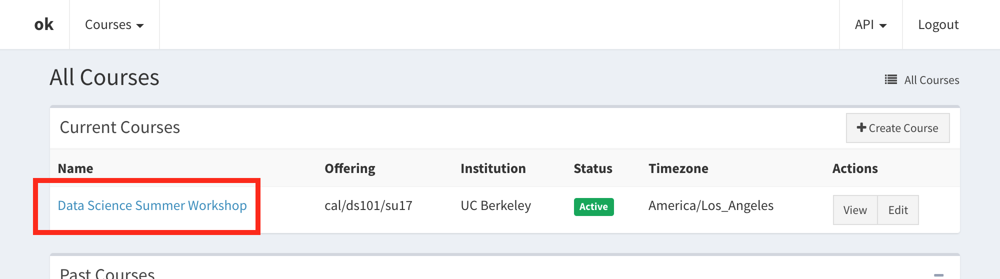
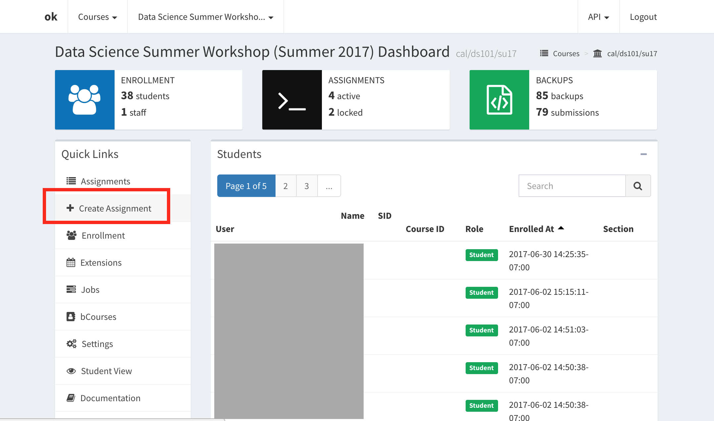

    <main class="jupyter-page">
    <div class="jb_cell">

<div class="cell border-box-sizing text_cell rendered"><div class="inner_cell">
<div class="text_cell_render border-box-sizing rendered_html">
<h1 id="Collecting-and-Grading-Assignments">Collecting and Grading Assignments<a class="anchor-link" href="#Collecting-and-Grading-Assignments"> </a></h1><p>We recommend using <a href="https://okpy.org">OK</a> for assignment submission and grading. OK is a great tool that allows students to submit notebooks by just running one cell, without having to do any uploads or downloads, as shown below.</p>
<p></p>
<p>If you choose not to use OK, you can also have students submit assignments through bCourses. Students can download the assignments from JupyterHub in the original <code>.ipynb</code> format, or other formats such as PDF, and then upload them to bCourses.</p>
<h3 id="What-is-OK?-(&quot;okpy&quot;)">What is OK? ("okpy")<a class="anchor-link" href="#What-is-OK?-(&quot;okpy&quot;)"> </a></h3><p><a href="https://okpy.org/">OK</a> is a tool that contains functionality for submitting and grading notebooks. OK can be used to test code in the notebooks, submit assignments by just running one cell, and grade submissions through the online interface.</p>
<p>OK has many advanced features that you can learn more about through their website. This guide will cover just the basics of using the system. There are two parts that you will interact with when using OK for your classes: the OK web interface at <code>okpy.org</code> and configuration files that are needed for each assignment. The web interface will be used for initial course setup, adding assignments to OK, and grading. The configuration files are needed to run tests and submit notebooks from JupyterHub.</p>
<h3 id="Initial-Course-Setup">Initial Course Setup<a class="anchor-link" href="#Initial-Course-Setup"> </a></h3><p>To get started with OK, you must first create a course on the OK website. Go to <a href="https://okpy.org">okpy.org</a>, scroll to the bottom of the page, and click on the <code>REGISTER YOUR COURSE</code> button to follow the steps for creating a new course. The steps should be fairly straightforward, but as always, feel free to post on <a href="https://piazza.com/berkeley/other/cs97">Piazza</a> if you run into any trouble.</p>
<p></p>
<h3 id="Assignment-Setup">Assignment Setup<a class="anchor-link" href="#Assignment-Setup"> </a></h3><p>After you have finished the initial course setup, below are the steps for setting up an assignment.</p>
<ol>
<li>Create an entry for the assignment on OK site</li>
<li>Create a folder for the assignment. This folder will contain the files mentioned in steps 3-5.</li>
<li>Create a <code>.ok</code> configuration file for the assignment</li>
<li>Create a <code>tests</code> folder with at least one test file and an <code>__init__.py</code> file</li>
<li>Add OK setup code to Jupyter notebook assignment</li>
</ol>
<p>If you are setting up <code>lab01</code>, for example, you should have a folder of content with the following structure:</p>

<pre><code>lab01/
    lab01.ipynb
    lab01.ok
    tests/
        __init__.py
        q1.py</code></pre>
<p>Note: Even if you are not using tests for your assignment, you will still need to have a tests folder with some placeholder files.</p>
<p>While this process might be a bit tedious the first time, it gets much simpler. You usually do not need to create the configuration files from scratch. You can reuse old files and change a few of the lines. <strong>To help you get started, we have set up some <a href="https://github.com/gunjanbaid/course-repo-example/tree/master/fa17/hw/hw02">template files</a>.</strong> Some of the steps above are outlined in more detail below.</p>
<h4 id="Step-1:-Create-an-entry-for-the-assignment-on-OK-site">Step 1: Create an entry for the assignment on OK site<a class="anchor-link" href="#Step-1:-Create-an-entry-for-the-assignment-on-OK-site"> </a></h4><p>Once you have created your course, you should be able to view it at <a href="https://okpy.org/admin/course/">okpy.org/admin/course/</a>. Go to this page and click on your course.</p>
<p></p>
<p>Click on the <code>Create Assignment</code> button on the left side of the page and follow the steps listed.</p>
<p></p>
<h4 id="Steps-2-3:-Create-configuration-file,-tests-folder">Steps 2-3: Create configuration file, tests folder<a class="anchor-link" href="#Steps-2-3:-Create-configuration-file,-tests-folder"> </a></h4><p>For <code>lab01</code>, you need to set up <code>lab01.ok</code>  and a <code>tests</code> folder with an <code>__init__.py</code> file and <code>q1.py</code>. Below, I have pasted the contents of the <a href="https://github.com/gunjanbaid/course-repo-example/tree/master/fa17/hw/hw02">template files</a>, mentioned above, with added comments on which lines to modify for use with your own course.</p>
<h4 id="lab01.ok"><code>lab01.ok</code><a class="anchor-link" href="#lab01.ok"> </a></h4>
<pre><code>{
  "name": "Homework 2",                    # change this line
  "endpoint": "cal/ds101/su17/hw02",       # change this line with OK info for your course
  "src": [
    "hw02.ipynb"                           # change this line, this is the file to be submitted
  ],
  "tests": {
      "tests/q*.py": "ok_test"
  },
  "protocols": [
      "file_contents",
      "grading",
      "backup"
  ]
}</code></pre>
<h4 id="tests-folder"><code>tests</code> folder<a class="anchor-link" href="#tests-folder"> </a></h4><p>Should contain at least <code>__init__.py</code> file and <code>q1.py</code> even if you are not using tests. These files are needed to ensure that OK does not error. You can add additional question files, such as <code>q2.py</code> and so on.</p>
<h4 id="__init__.py"><code>__init__.py</code><a class="anchor-link" href="#__init__.py"> </a></h4><p>This should be blank.</p>
<h4 id="q1.py"><code>q1.py</code><a class="anchor-link" href="#q1.py"> </a></h4><p>The test in this file is checking whether the value of <code>x</code> is equal to 91. <code>x</code> is a variable defined somewhere in the notebook corresponding to this test file. You can change the two lines indicated to create a different test.</p>

<pre><code>test = {
  'name': '',
  'points': 1,
  'suites': [
    {
      'cases': [
        {
          'code': r"""
          &gt;&gt;&gt; x                          # change this line
          91                             # change this line
          """,
          'hidden': False,
          'locked': False
        }
      ],
      'scored': True,
      'setup': '',
      'teardown': '',
      'type': 'doctest'
    }
  ]
}</code></pre>
<h4 id="Step-4:-Add-OK-code-to-notebook">Step 4: Add OK code to notebook<a class="anchor-link" href="#Step-4:-Add-OK-code-to-notebook"> </a></h4><p>Below is the code needed to import OK, run the <code>q1.py</code> test shown above, and submit the assignment. You can change the marked lines to use this code for your own assignments. The original code is found in the <code>hw02.ipynb</code> file in the <a href="https://github.com/gunjanbaid/course-repo-example/tree/master/fa17/hw/hw02">template files</a>.</p>

<pre><code># These lines load the autograder tests.
from client.api.notebook import Notebook
ok = Notebook('hw02.ok')                     # change this line to correct .ok file
_ = ok.auth(inline=True)</code></pre>

<pre><code># Test q1
x = 91                                       # change this line to desired test
_ = ok.grade("q1")                           # change this line to desired test file</code></pre>

<pre><code># Submit the assignment.
_ = ok.submit()</code></pre>
<h3 id="Additional-Resources">Additional Resources<a class="anchor-link" href="#Additional-Resources"> </a></h3><ul>
<li><a href="https://www.youtube.com/watch?v=PFTm7hmnKho&amp;rel=0">Video on how to use OK with Jupyter notebooks</a></li>
<li><a href="https://okpy.github.io/documentation/">OK documentation</a></li>
<li><a href="https://okpy.org/about/publications/">Publications and talks on OK</a></li>
</ul>

</div>
</div>
</div>
</div>

 


    </main>
    